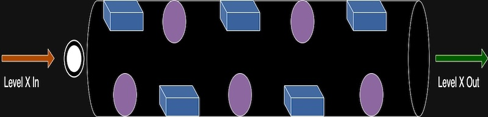

Design
The design of Space Drift: Mind & Motion is focused on creating an engaging and challenging experience for players in a microgravity environment. Key design features include:
Transparent Tube Structure
The central gameplay element is a horizontal transparent tube, symbolizing the confined space in which players navigate. This design enhances visibility and immersion.
Obstacle Variety
Inside the tube, a mix of 3D rectangular blocks and spheres creates diverse challenges:
- Rectangular Blocks: Fixed obstacles that require players to strategize their movements.
- Spheres: Moving obstacles that add unpredictability to the gameplay.
Levels and Difficulty Progression
The game features a clear progression system:
- Levels 1 to 5: Designed to introduce players to the mechanics with simpler arrangements of obstacles.
- Levels 6 to 10: Increase in difficulty, with reduced ball size to heighten the challenge.
Aesthetic Elements
The background features a cosmic theme, with stars and distant planets to create a sense of exploration. The overall color scheme and visual elements are designed to be visually appealing and engaging.
Visual Representation
Below are images representing the design concepts for levels 1 to 5 and levels 6 to 10:
